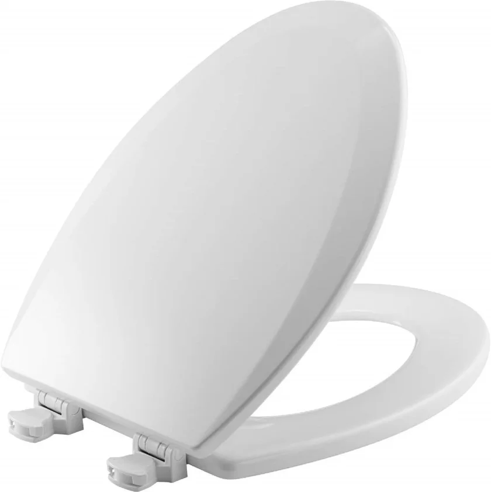
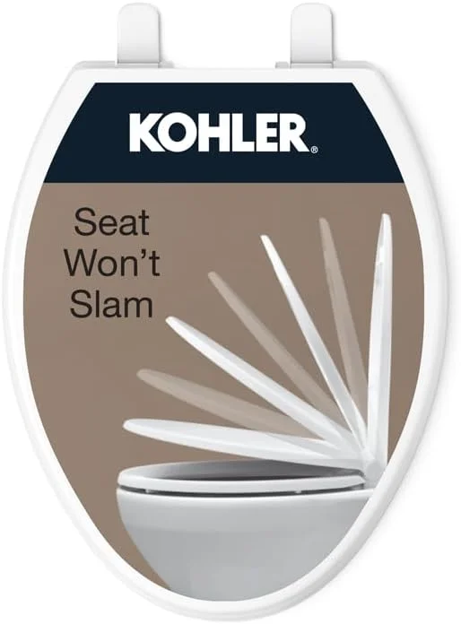
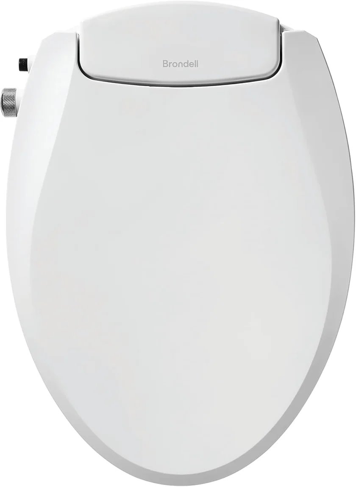
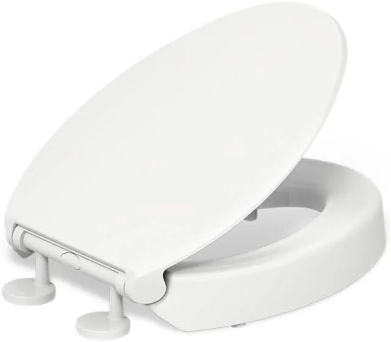
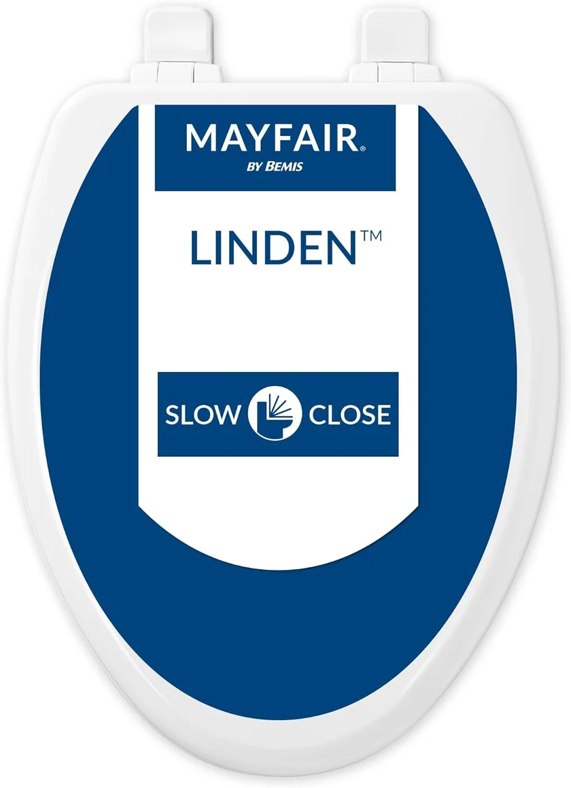
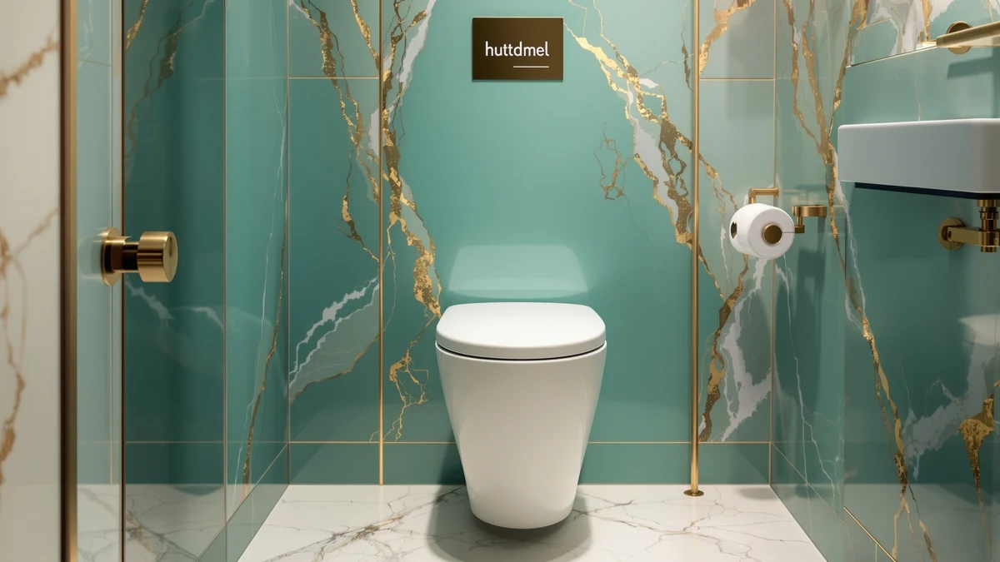
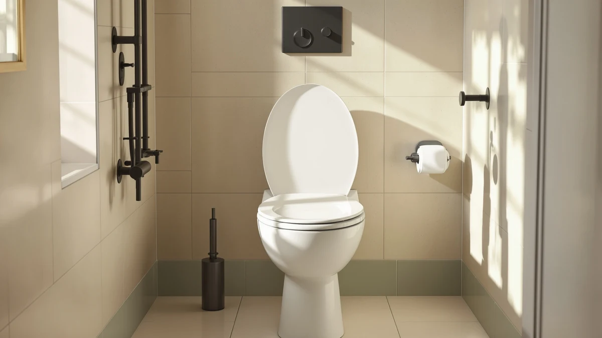

A toilet seat lives or dies by its hinges.
Most seats look alike in a product photo. The one you replace within a year and the one you forget about differ in three places: the hinge, the way it fastens to the bowl, and the material. We compare seats on those three points, using spec sheets, current Amazon prices and what verified owners report.
Our 6 picks, side by side
From our full comparison of toilet seats. Each one wins a specific job.
| Pick | Product | Price | Buy |
|---|---|---|---|
| Best Overall | Bath Royale Slow Close Toilet Seat BR501Duroplast thermoset, stainless steel hinges, 10+ year lifespan | $79.98 | Check price |
| Best Budget |  Bemis 1500EC Lift-Off Wood Elongated Toilet SeatEnameled wood, Lift-Off hinges, made in the USA | $17.73 | Check price |
| Best Value |  KOHLER Brevia Slow Close Elongated Toilet SeatPolypropylene, Quiet-Close damper, Q3 Advantage hinges | $31.44 | Check price |
| Best Bidet Seat |  Brondell Swash Ecoseat Non-Electric Bidet Toilet SeatNon-electric, dual retractable nozzles, soft-close lid | $89.99 | Check price |
| Best Elevated |  KOHLER Hyten Elevated Soft Close Elongated Toilet Seat+1 inch elevation, Quiet-Close, ReadyLatch tool-free | $52.95 | Check price |
| Best Wood Seat |  Mayfair Linden Slow Close Toilet SeatEnameled wood, Whisper Close hinge, STA-TITE fastening | $36.99 | Check price |
Just published
New reviews and guides go up every day.

Huttdmel Commercial Toilet Seat Review

Topseat Bamboo Toilet Seat Review

Kohler K-26801-0 Impro ReadyLatch Quiet Close Elongated Toilet Seat Review

Tvovme Raised Toilet Seat Review
Find the right seat for your bathroom
Guides and reviews from across the site, grouped by the question they answer.
Shape and fit
- The Best Elongated Bidet Toilet SeatsComparison
- How to Measure Toilet Seat Size: The Complete GuideGuide
- 7 Best Elongated Toilet Seats (Compared & Reviewed)Comparison
- 5 Best Round Toilet Seats (Compact & Comfortable)Comparison
- Elongated vs Round Toilet Seats: Which Is Better?Comparison
- Kohler K-26801-0 Impro ReadyLatch Quiet Close Elongated Toilet Seat ReviewReview
+ 47 more in all articles
Mobility and comfort
- Best Toilet Seat for Heavy PersonComparison
- Best Toilet Seat RiserComparison
- Best Raised Toilet Seats with ArmsComparison
- Best Toilet Seat Lifts for Elderly: 7 Top PicksComparison
- Best Raised Toilet Seats for Surgery Recovery: 7 Top PicksComparison
- The Best Toilet Seats for ArthritisComparison
+ 32 more in all articles
Bidet and heated seats
- Bidet Toilet Seat Not Spraying? How to Troubleshoot ItGuide
- Best Bidet Toilet Seats Under 200: 6 Top PicksComparison
- Best Toilet Seat for Tushy Bidet: 7 Top PicksComparison
- Best Bidet Seat: 7 Top PicksComparison
- Best Heated Toilet Seats Without Bidet: 7 Top PicksComparison
- The Best Bidet Toilet Seat Electrical RequirementsGuide
+ 33 more in all articles
Kids and family
- Best Toilet Seat With Toddler Insert: 7 Top PicksComparison
- Best Toilet Seat for Boys: 7 Top PicksComparison
- Best Toilet Seats for Toddlers: 7 Top PicksComparison
- Best Potty Seats 2026: 6 Parent-Top Picks from $12Comparison
- Huttdmel Toilet Seat ReviewReview
- Aünsffer Toddler Toilet Seat ReviewReview
+ 1 more in all articles
Fix, install and clean
- How to Remove Green From Toilet Seat Hinges: Complete GuideGuide
- How to Clean Toilet Seat YellowGuide
- Best Toilet Seats That Don't StainComparison
- Best Toilet Seats for Easy Cleaning: Complete GuideComparison
- How to Remove Rusted Toilet Seat Bolts (When They Won't Budge)Guide
- How to Fix a Squeaky Toilet Seat in Under 10 MinutesGuide
+ 7 more in all articles
Materials and brands
- Best Toilet Seat BrandComparison
- Best Kohler vs Bemis Toilet SeatsComparison
- Best Mayfair Toilet Seats: 7 Top PicksComparison
- Best Toilet Seat for Toto Drake: 7 Top PicksComparison
- The Best Duroplast Toilet Seat vs WoodComparison
- The Best Plastic vs Wood Toilet SeatComparison
+ 25 more in all articles
How we research
What we compare
- The hinge: plastic, zinc or stainless steel, and whether it closes slowly on its own.
- How it fastens: STA-TITE, ReadyLatch, Q2 and Q3 hinges, or top-mount bolts.
- Shape: a round bowl measures about 16.5 inches from the bolt holes to the front edge, an elongated one about 18.5.
- Price: Amazon's current price, checked every night.
- What verified owners report after months of daily use.
What we don't do
We don't run a lab, and we don't claim to have installed or handled these products ourselves. Our picks come from published specifications, current Amazon prices and what verified owners report again and again.
Every Amazon link on this site is an affiliate link. It never decides the ranking.
Common questions
Round or elongated: how do I know which seat fits?
Measure from the center of the two bolt holes to the front edge of the bowl. About 16.5 inches means a round bowl; about 18.5 inches means elongated. Our measuring guide covers the odd sizes.
Is a soft-close seat worth it?
Usually, yes. The damper stops the lid from slamming and adds little to the price on most models. The complaint owners raise most is a damper that weakens over time, which is why the hinge material matters as much as the soft-close label.
Do I need an outlet for a bidet seat?
Not for a non-electric bidet seat, which runs on the cold-water supply alone. Electric seats with warm water, a dryer or a heated seat need a grounded outlet within reach of the cord.